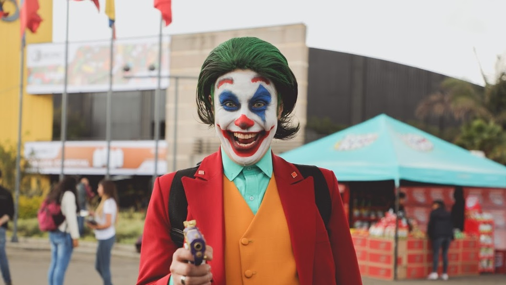

EL REGRESO DEL DRAGÓN El Salón del Ocio y la Fantasía (SOFA) vuelve a Corferias en octubre
El Salón del Ocio y la Fantasía (SOFA) que se realizará del 13 al 17 de octubre en Corferias, será el espacio de reencuentro de las comunidades culturales y fanáticos del cosplay, anime, manga, videojuegos, entre otros, que contará con una amplia oferta de actividades experienciales y una gran muestra comercial.

¡¡ Registrate y enterate de todas las noticias del mundo geek con nosotros!!
Referencias:
Momentos, R. (s. f.). EL REGRESO DEL DRAGÓN El Salón del Ocio y la Fantasía (SOFA) vuelve a Corferias en octubre. Revista Momentos. Recuperado 17 de octubre de 2022, de https://revistamomentos.co/el-regreso-del-dragon-el-salon-del-ocio-y-la-fantasia-sofa-vuelve-a-corferias-en-octubre/
¿Aún no sabes qué hacer en SOFA? Conoce la programación y nuestros recomendados. (s. f.). Canal Trece. Recuperado 17 de octubre de 2022, de https://canaltrece.com.co/noticias/sofa-2019-programacion-boletas-invitados-bogota-corferias/